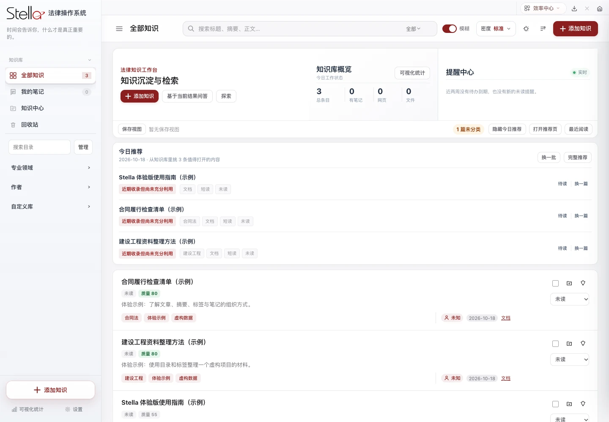

让知识，随时可用。
集中整理法律知识与个人笔记，沉淀工作中的思考与资料，为下一次检索留下一条清晰路径。
 下载 Stella
下载 Stella
知识不再散落，案件自有脉络。
从一次检索到一份文书，Stella 将日常法律工作
收进同一个安静、清晰的工作空间。

原生 Mac 应用
工作资料保存在本机
按需连接自己的服务
01 / 日常工作，有迹可循
保留法律工作的细节，减少在工具之间来回切换。
知识、案件、文书与辅助工具，各就其位。
集中整理法律知识与个人笔记，沉淀工作中的思考与资料，为下一次检索留下一条清晰路径。
围绕案件组织资料和日常工作，在同一个空间查看、管理相关内容，让工作衔接更自然。
生成授权委托书、法定代表人证明书、业务审批表等常用文书。标准名称保留，律所 Logo 可由你上传替换。
按需要配置 AI、邮箱与相关服务，使用自己的账号与密钥，将辅助能力接入工作流。
02 / 你的工作空间
公开版沿用 Stella 的品牌与界面。
从用户名到律所标识，你可以把它调整成自己的工作空间。
可在设置中自行编辑
由你选择显示或隐藏
默认隐藏，需要时再开启
用于生成文书，可自行上传
功能示意 · 实际设置请在应用内操作
03 / 准备开始
适用于 Apple 芯片 Mac。
无需自行安装 Python 或 Node.js。
点击「下载 Mac 版」，获取 ZIP 安装包。下载完成后，双击解压。
Stella…preview3.zip将解压后的 Stella.app 拖入 Mac 的「应用程序」文件夹。
在「应用程序」中启动 Stella。首次进入可使用虚构演示资料体验，再配置自己的工作信息。
准备就绪04 / 公开版说明
安装包仅含虚构演示内容，不包含作者团队成员的个人资料、真实客户或案件信息、密钥与登录状态。公开版不提供个人财务「个人中心」。
公开版使用独立的本地数据目录 ~/Library/Application Support/StellaPublic。AI、邮箱、法院和 MCP 等联网服务，需要配置自己的账号；使用时相关数据会按你的操作发送至相应服务。
所函一键上传与自动审批、文书快速报批、会议室预定、打印机扫描盘保留入口。具体页面提示需定制化开发，详情请联系作者。
联系作者，讨论定制05 / 你可能想了解
Stella 是整合法律知识、案件、文书与辅助工具的桌面工作空间。下载公开体验版后，可直接体验演示内容。部分联网服务需你自行配置账号；团队内部业务流程仅保留定制入口。
当前安装包面向配备 Apple 芯片（M 系列）的 Mac，要求 macOS 11.3 或更新版本。暂不提供 Intel Mac、Windows 或手机安装包。
公开仓库用于分发安装包、说明和许可，应用源码保持私有。使用需遵守仓库中的许可证：仅限非商业使用、禁止修改，并保留作者署名。第三方组件遵循各自许可。查看完整许可证 ↗
在应用设置中编辑用户名，并选择是否显示。首页侧边栏问候语默认隐藏，可在设置中开启。文书生成区域支持上传自己的律所 Logo，以替换默认标识。
需要。AI、邮箱、法院服务及 MCP 等功能使用你自己的账号或密钥。部分工具依赖 Chrome、Office 文档转换器等外部应用，请按使用的功能配置。
在 GitHub Releases 查看最新版本，退出旧版后再替换应用。重要资料建议先备份。如遇问题，请前往 GitHub Issues 描述现象、应用版本与系统版本，避免上传真实案件或个人敏感信息。
STELLA / READY WHEN YOU ARE
v1.0.0-preview3 · Apple 芯片 · macOS 11.3+
发布说明与 SHA-256 校验